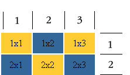
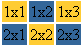

Главная | Оглавление | Словарь
Долго ли, коротко ли, но мы добрались до таблиц. При создании сайтов таблицы используются очень часто. Например, Постройка.ру (родной сайт учебника) не обошлась бы в своем оформлении без таблиц никак. Или вот еще пример, сайта, оформление которого тоже не обошлось бы без таблиц (заметьте, ни одной картинки, когда пройдете главы о таблицах без труда сможете сверстать подобное).
Таблица задается тэгом:
<table></table>
Увы, это далеко не все: таблица состоит из строк и столбцов (ячеек), поэтому нам надо еще и указать их.
<tr></tr> - строчка таблицы
<td></td> - столбец (ячейка) таблицы

Итак, перед вами таблица из двух строк и трех столбцов (ячеек). Для наглядности я выделила ячейки таблицы разными цветами. Границы таблицы не заданы, поэтому вы их не видите. Как же такая красота получилась? Итак следите за движениями моих рук:
<table>
<tr></tr>
<tr></tr>
</table>
Сначала задаем строки. В нашем примере их две. Теперь в каждой строке зададим по три столбца (ячейки):
<table>
<tr>
<td></td>
<td></td>
<td></td>
</tr>
<tr>
<td></td>
<td></td>
<td></td>
</tr>
</table>
Мой вам совет, для начала рисуйте таблицу на листе бумаге, чтобы все наглядно видеть.
Итак, теперь нам надо заполнить получившийся каркас:
<table>
<tr>
<td>1x1</td>
<td>1x2</td>
<td>1x3</td>
</tr>
<tr>
<td>2x1</td>
<td>2x2</td>
<td>2x3</td>
</tr>
</table>
Надеюсь мы поняли, что первая цифра в загадочных надписях - это номер ряда, а вторая номер столбца (1х2 - первый ряд, второй столбец и т.д). Это опять же вам для наглядности. Если посмотреть то, что уже у нас с вами получилось, то это будет выглядеть так:
Увы, фона (голубенького или желтенького, как в примере) еще не видно. Фон задается параметром bgcolor="цвет_фона". Фон можно задать для таблицы в целом, для ряда, для столбца (в пределе одного ряда). В нашем случае мы задаем фон для каждого столбца.
<table>
<tr>
<td bgcolor="#FFCC33">1x1</td>
<td bgcolor="#336699">1x2</td>
<td bgcolor="#FFCC33">1x3</td>
</tr>
<tr>
<td bgcolor="#336699">2x1</td>
<td bgcolor="#FFCC33">2x2</td>
<td bgcolor="#336699">2x3</td>
</tr>
</table>
Вот, что у нас получилось:

Попробуйте задать фон для таблицы и для ряда (это для усвоения материала). Когда все усвоится переходите к следущей ступеньке, и мы продолжим разговор о таблицах.